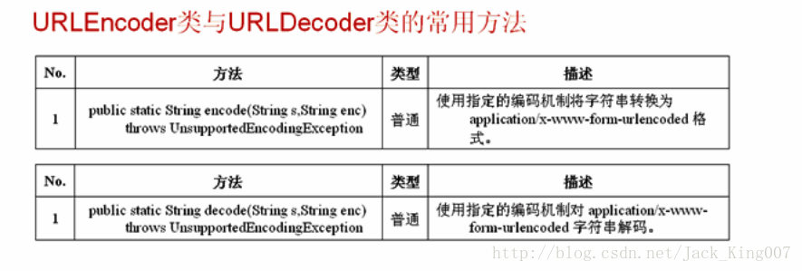

从java网络编程学起（3）
URLEncoder 与URLDeoder
结果：编码之后的内容：%E6%9D%8E%E5%85%B4%E5%8D%8E
解码之后的内容：李兴华
了解编码和解码的操作

实例
package KownClass ;
import java.net.URLDecoder ;
import java.net.URLEncoder ;
public class FactoryDemo02{
public static void main(String args[]) throws Exception{
String keyWord = "李兴华" ;
String encod = URLEncoder.encode(keyWord,"UTF-8") ; // 进行编码的操作
System.out.println("编码之后的内容：" + encod) ;
String decod = URLDecoder.decode(encod,"UTF-8") ; // 进行解码操作
System.out.println("解码之后的内容：" + decod) ;
}
};结果：编码之后的内容：%E6%9D%8E%E5%85%B4%E5%8D%8E
解码之后的内容：李兴华